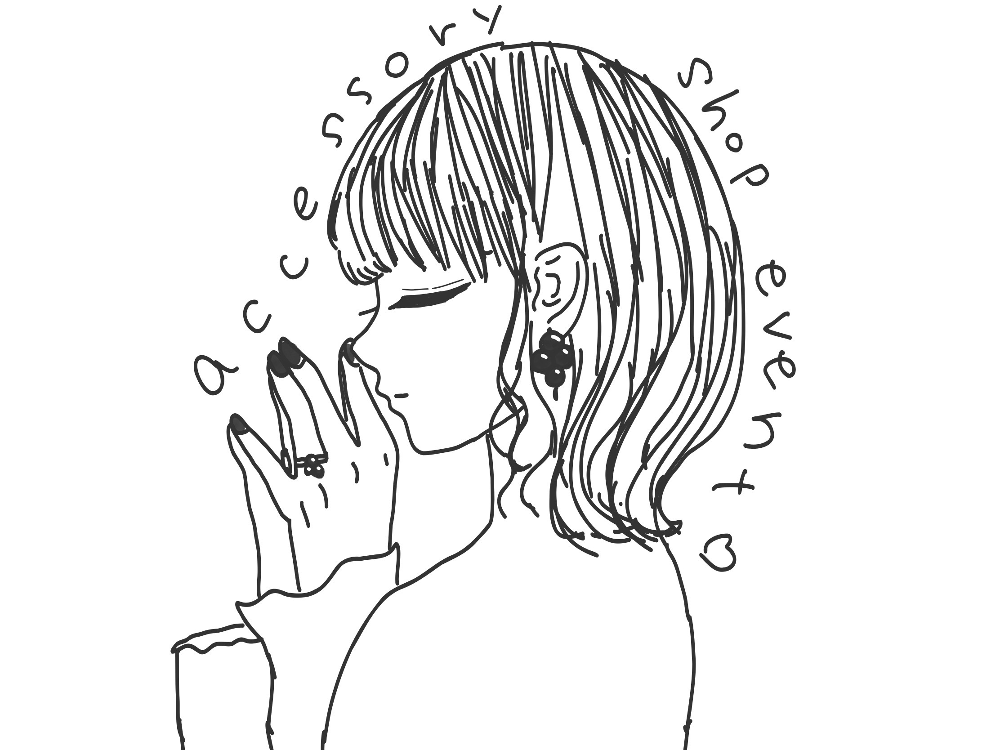

『瀬戸内のハレの日』1000s個展
『おいりアクセサリー』に新作登場！ 「かがわ県産品コンクール」にて県知事賞（最優秀賞）を受賞したおいりアクセサリーの展示販売の他、新作のお披露目。10月10日は「おいりの日」！ コロナの自粛ムードが続く中、結婚式や七五三などのハレの日を迎える人を、おいりのようにカラフルに応援したいという企画展。香川で人気の貸衣装店『ウエディングボックスみつわ』の衣装展示やMI CORAZONオリジナルウェディンググッズコラボ企画を予定。
日時：2021年10月9日(土)～22日(金)
火曜日定休。作家在廊日は期間中の土日。
12:00～17:00
場所:香川県 高松市 Make Merry gallery
最寄り駅:瓦町駅(香川県), 栗林公園北口駅(香川県), 栗林駅(香川県), 片原町駅(香川県)